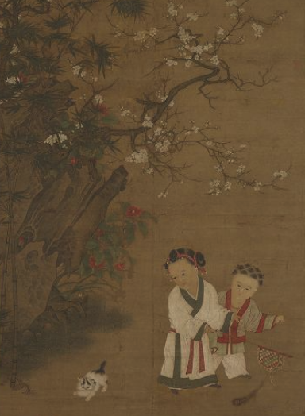

Chinese Art Masterpieces in Print: History, Lineage, Legacy
傳承經典: 中國古代書畫名作復刻品
Exhibition Catalogue
Introduction Essays
-
Transmission, Imitation, Lineage, and Tradition in Chinese Painting and Calligraphy through the Dynasties
-
JP's Essay
Artworks
Miao 描, Mo 摹, Lin 臨, Fang 仿, Copy, Reproduce, Recreate: Transmission, Imitation, Lineage, and Tradition in Chinese Painting and Calligraphy
"Copy" often carries a negative connotation in the Euro-American artistic tradition. In modern visual cultural study, Walter Benjamin's famous discussion on the loss of "aura" in the age of mechanic reproduction has influenced generations of modern and contemporary art criticism. Today, however, as technological advancement dramatically reduces the visible gap between "originals" and "copies", we grow more and more interested in understanding and exploring new possibilities for art facsimiles.
In premodern China, the copying of artworks has had a long and unique tradition, and copying was an essential element of artistic creation and transmission. Copies had their own functions, values, and significance. In painting and calligraphy in pre-modern China, copying of masters was not only an important means for learning, but also part of the path towards excellence.
In Early China, the acceptance and promotion of copying as mode of transmission and emulation probably originated from Confucius’s saying 述而不作 “[I] transmit instead of produce [knowledge]”, recorded in the Analects. Confucius as the most venerated sage in Chinese history had set a model for later scholars. The text-based knowledge transmission system in China was built upon this principle of reproduction and imitation.
Such principles also govern artistic creation. In painting and calligraphy practice, for an aspiring artist, copying old masters is the first step of mastering the art. Painting and calligraphy are two of the San Jue 三絕 (“Three Perfections”, along with poetry), the highest forms of art for the literati. After the fall of the long and powerful Han dynasty, during the more chaotic Six Dynasties period, both calligraphy and painting became modes of expression for the learned. These two arts continued to develop in subsequent ages, forming a history of more than a millennium of creativity, tradition, lineage, and also innovation.
Gu Shi Huapu 顧氏畫譜 (Mr. Gu’s Painting Album), also known as Lidai Ming Gong Huapu 歷代名公畫譜 (Album of Paintings by Famous Masters of Successive Dynasties), is an example of such a copying tradition in Chinse art history. First printed in 1603, this album encapsulates the history of pre-modern Chinese painting, the power of woodblock printing technology, and its massive market during the Ming dynasty. This album illustrates the styles of ancient master painters as models for aspiring artists. Its publication paralleled the fervor for art collecting among merchant families as a means to elevate their social status, while members of the literati class served as advisors and connoisseurs. Together, they acted as the arbiters of taste, controlling the aesthetic discourse. Gu Shi Huapu, along with many other painting manuals published in late imperial China, reaffirmed the longstanding tradition of emulating the old masters as the paradigm for artistic practice and facilitated the consolidation of China’s art historical lineage.
The painting manuals on the Ming-Qing market such as Gu’s achieved reproduction through a “reductive transformation”, both in physical size and in pictorial content. Because of the restriction of the medium of woodblock engraving, such representation of painting masterpieces only captures essential elements of the original, forming a general “idea” or “impression” of the complex of visual information of the pictorial content.
Although polychrome printing had become available in the 16th century, Gu’s Album was monochrome–a reduction of the palette of the original, too. Gu’s Album may be seen as the earliest example of the transmission of artistic knowledge and connoisseurship for the general public through mass reproduction.
Another interesting fact was that Gu himself probably saw many of the masters’ works through copies only, as originals were not easy to access, and the question of authenticity was an issue for originals that were available. However, Gu’s Album and its methods of art reproduction/copy-making as had a prolonged influence on later painting manuals, and in turn also had an impact on the visual culture during and after the Ming dynasty.
Later, after Gu’s time, the Album was used as a reference in authenticating paintings attributed to earlier masters, indicating that such reproduction, despite a questionable level of authenticity in its representation, could also serve as documentation and a form of proof for the original.
Hand-copying techniques (miao 描, mo 摹, lin 臨, fang 仿), and the less organic techniques of rubbing and woodblock printing dominated the reproduction of art in China until the introduction of modern reproduction technologies, such as lithography, halftone, and collotype introduced from Europe; and later, contemporary reproduction technologies such as high-resolution cameras and scanners and giclee printing brought art reproduction to a whole new level.
Modern mechanical reproductive technology was quickly accepted and well received in early 20th century China, although they did not further explore whether China’s long-established print culture played a role. During the early phase of China’s modernity, in the beginning of the 20th century, the periodical Guohua Yuekan 國畫月刊 utilized modern photomechanical reproduction technology to find a place for traditional Chinese ink painting as a critical part of the Chinese cultural identity and inheritance during the country’s rapid transition into modernity. The various modern modes of visual reproduction shaped perception of art in the socio-historical background of the “preserving national essence” movement that initiated around 1908: in such political climate Chinese painting became an embodiment of China’s cultural heritage and national pride, and photomechanical reproduction technology played a significant role in the dissemination of such artistic knowledge and nationalist sentiment. Through mechanical reproduction, a national cultural treasure–Chinese painting–was no longer confined to private enjoyment but became available to the general public.
In early 20th century China, an age of transformation, revolution, and crisis, new technology actively embraced and its impact on artistic culture was seen as positive. Walter Benjamin’s discussion of the aura focused primarily on film and photography (as mechanically reproductive media) and his concern with these mass media in context of the political climate of early 20th century Europe, but the extended discourse on the issue of the aura in art reproduction continued to explore the definition of art and artistic value. A recently re-discovered 1930 short essay by art historian E. Panofsky was probably the first to acknowledge the value of photomechanical reproduction of works of art, stressing the importance of quality as representation over authenticity. A similar view presented in a case study of the Factum Arte’s high-profile facsimile project of Veronese’s painting Nozze di Cana in 2006: by showing the level of quality a high-tech facsimile can achieve, they argue that our focus should be on the quality of the reproduction as copies contribute to the trajectory of an artwork, and that the aura can migrate to a good replica.
Looking at an artwork face-to-face generate very different affective experiences from looking at it on a screen or in a book. Modern facsimiles produced with advanced scanning and printing technology strives to imitate if not replicate the awe of seeing an original work of art. We might assign different kinds of values to different kinds of reproductions, and embrace the Master’s wisdom – that the transmission of knowledge and art is no less important than their creation.
Dr. JP's Essay
IPR
Catalogue
- Gu Shi Huapu 顧氏畫譜/歷代名公畫譜 | GU Bing 顧炳
- Xi Shan Qing Yuan Tu 溪山清遠圖 | XIA Gui 夏圭
- Fuchun Shan Ju Tu 富春山居圖 | HUANG Gongwang 黃公望
- Que Hua Qiuse Tu 鵲華秋色圖 | ZHAO Mengfu 趙孟頫
- Xi Shan Yu Yin Tu 溪山漁隱圖 | TANG Yin 唐寅
- Wu Ma Tu 五馬圖 | LI Gonglin 李公麟
- Han Xizai Yeyan Tu 韓熙載夜宴圖 | GU Hongzhong 顧閎中
- Gong Yue Tu 宮樂圖
- Guoguo Furen Chun You Tu 虢國夫人春遊圖 | ZHANG Xuan 張萱
- Fa Jie Yuanliu Tu 法界源流圖
- Yuzhi Geng Zhi Tu 御製耕織圖
- Qingming Shang He Tu 清明上河圖 | ZHANG Zeduan 張擇端
- Qingming Shang He Tu 清明上河圖 | QIU Ying 仇英
- Dongri Ying Xi Tu 冬日嬰戲圖 | SU Hanchen 蘇漢臣
- Ting Qin Tu 聽琴圖 | Emperor Huizong (ZHAO Ji) 宋徽宗 趙佶
- Lu Shan Gao 廬山高圖 | SHEN Zhou 沈周
- Sanyue Shangtao 乾隆十二月行樂圖之三月賞桃 | Giuseppe Castiglione 郎世寧
- Lanting Xu Copy 摹蘭亭序 | FENG Chengsu 馮承素
- Lanting Xu + Lanting Xiuxi Tu 蘭亭序 蘭亭修禊圖 | WEN Zhengming ZHU Yunming 文徵明 祝允明
- Taohua Shuang Yan 桃花雙燕 | Giuseppe Castiglione 郎世寧
- Yulan Shuang Niao 玉蘭雙鳥 | YU Zhi 余雉
- Qian Li Jiang Shan Tu 千里江山圖 | WANG Ximeng 王希孟
- Ji Zhi Wengao 祭姪文稿 | YAN Zhenqing 顏真卿
- WANG Xizhi Moji Heji 墨跡合集 | WANG Xizhi 王羲之
- San Xi Tang Mobao Heji 三希堂墨寶合集 | WANG Xizhi, WANG Xianzhi, WANG Xun 王羲之 王獻之 王珣
- Bai Lu Tu 百鹿圖 | Ignatius Sichelbart 艾啟蒙
- Bai Jun Tu 百駿圖 | Giuseppe Castiglione 郎世寧
- Rui Gu Tu 瑞谷圖 | Giuseppe Castiglione 郎世寧
- Yuanming Yuan Xiyang Lou Tongban Hua 圓明園西洋樓銅版畫 | Giuseppe Castiglione 郎世寧
- Yuanmingyuan Sishi Jing Tu Yong 圓明園四十景圖詠 | TANG Dai, SHEN Yuan 唐岱 沈源
Gu shi Huapu 顧氏畫譜/歷代名公畫譜

GU Bing (active 1594-1603) | Gu Shi Huapu [Mr. Gu's Painting Album/Famous Painters through the Dynasties]
Ming | Original publication: 1603 | Woodblock Print Album | Cheng Yu Tung East Asian Library Rarebook | Call No.: ND1042 .K75 1888
顧炳 | 顧氏畫譜/歷代名公畫譜 | 明 萬曆三十一年 | 雙桂堂 印 | 紙本雕版
Gu Shi Huapu 顧氏畫譜(Mister Gu's Painting Album), also known as Lidai Ming Gong Huapu 歷代明公畫譜(Album of Paintings by Famous Masters of Successive Dynasties), was first published no later than 1603. It is a woodblock print anthology that emulates the works of ancient masters in monochrome. Designed by Gu Bing [active 1594-1603], the albums are organized chronologically and compile works from 106 renowned painters, ranging from the Eastern Jin dynasty (317–420 CE) to the Wanli period of the Ming dynasty (1573–1620). Each artist is represented by one painting, accompanied by postscripts and colophons introducing their biographies, painting themes, and artistic styles, along with brief commentaries from the editors. As stated in the preface, Gu began his artistic training in childhood, studying trace copying and connoisseurship under his uncle using the family collections. He later travelled extensively to refine his skills and was eventually recognized and introduced to the imperial court as a professional painter. During his tenure in Beijing, he began compiling the album, which was eventually published in his hometown, Hangzhou.
Although the album is named after Gu Bing, it is a collective work involving producers such as the drafting painter, printmakers, and publishers. It also includes over a hundred reviewers and critics—the majority of whom were scholar-officials selected through the imperial examination whom Gu made acquaintance with during his tenure in Beijing—along with some local gentry. Despite the imperial and governmental identities of the editors, the album's curatorial approach is inclusive, tracing the lineages of the masters while also achieving a balance between literati and professional painting, the latter of which was often belittled at the time. Its inclusiveness made it a valuable reference for aspiring beginners to practice trace copying the works of past masters and to familiarize themselves with their distinctive styles and techniques. The album, which compiles woodblock print reproductions of paintings from successive dynasties alongside textual descriptions, was the first of its kind to record the pictorial history of Chinese painting up to the Ming Dynasty. Through a structured presentation of artistic lineage, it linked past masters into a continuous tradition and allowed future generations to learn through imitation.
Chen Yan. “‘Revering the Song and Embracing the Yuan’: On the Compilation Principles of Gu Family Painting Catalogue [‘Chong Song yi Yuan’—Lun Gu shi huapu de shoulu yuanze].” Qilu Realm of Arts, no. 5 (2020): 61–64. (In Chinese).
Du Song. “Book Production and Producers in Early Modern Society: A Discussion Centered on the Late Ming Gu Family Painting Catalogue* [Zaoqi xiandai shehui de tushu zhizuo yu zhizuo zuozhe—yi wan Ming* Gu shi huapu* wei zhongxin de taolun].” Art Observation 10 (2024): 45–58. (In Chinese).
Shen Xin. 沈歆. “Mode of copying and model function of Ming dynasty painting albums–taking Master Gu’s Painting Album as example 明代集古画谱的临仿模式与粉本功能——以《顾氏画谱》为中心”. Meiyuan美苑 2011 (3) pp.75-82
Xi Shan Qing Yuan Tu 溪山清遠圖

XIA Gui | Xi Shan Qing Yuan Tu [Pure and Remote Streams and Mountains]
Southern Song (painted c. 1180-1230) | Handscroll | Ink on Paper | Original Dimensions: 46.5x889.1cm | Original Location: National Palace Museum Taipei
夏圭｜溪山清遠圖｜南宋 宁宗朝｜手卷｜紙本水墨｜原作尺寸 46.5x889.1cm ｜原作藏 台北故宮博物院
Xia Gui 夏圭 (active c. 1180-1230), courtesy name Yuyu 禹玉, a native of Qiantang 錢塘 (modern day Hangzhou). During the reign of Southern Song Emperor Ningzong 寧宗 (1195-1224), Xia served in the imperial Painting Academy as a Daizhao 待詔. He was one of the most well-known Southern Song court painters.
In Chinese art history, Xia Gui’s name was frequently paired with Ma Yuan 馬遠 (1160-1225), known as “Ma-Xia”, or “Ma yijiao, Xia banbian 馬一角 夏半邊 (Ma one corner, Xia half edge)”, as Ma Yuan’s typical composition is often diagonal and Xia Gui’s occupies half of the picture-frame.
Xi Shan Qing Yuan Tu is esteemed as one of Xia Gui’s most representative works. Using ink, this long scroll depicts a rich topography of the water-abundant landscape of Southern China, showing multiple viewpoints.
The extant painting is not signed, but Xia Gui's authorship is identified in a 1378 colophon inscription by early Ming dynasty literatus Chen Chuan 陳川. A later inscription by Emperor Qianlong reveals that the artist’s signature was cut away. In modern scholarship, there is still debate over the painting’s authorship, but as the first sheet is number shorter than the subsequent ones in the multiple paper sheets that compose the scroll, Emperor Qianlong’s remark is possibly correct. Regardless of the true painter, this scroll is highly valuable in understanding the handscroll landscape format and the use of ink in Southern Song court painting.
Zhang, Mianxi 张眠溪. 2014. “Xi Shan Qing Yuan Tu Kaoxi《溪山清远图》考析.”Zhongguo Shuhua 中国书画(03),48-74.
Fuchun Shan Ju Tu 富春山居圖

HUANG Gongwang | Fuchun Shan Ju Tu [Dwelling in the Fuchun Mountains] (The Wuyong Scroll)
Yuan Dynasty (painted c.1347–1350) | Handscroll | Ink on paper | Original dimension:33 × 636.9 cm | Original location: National Palace Museum, Taipei and Zhejiang Provincial Museum
黃公望｜富春山居圖(無用師卷) | 元代（1347–1350年作）｜手卷｜纸本水墨 ｜原作尺寸：33 × 636.9 cm｜原作藏 台北故宫博物院（剩山图），浙江省博物馆（无用师卷）
Huang Gongwang 黃公望 (1269-1354), courtesy name Zijiu 子久, a native of Changshu 常熟 (modern day Suzhou), one of the Four Yuan Literati Masters 元四大家.
Dwelling in the Fuchun Mountains is the epitome of the artistic virtuoso of Huang Gongwang. The artist’s inscription records that he had spent a few years sketching live in the mountainscape of Fuchun in modern Zhejiang, before finishing the details in the studio and gifting it to his friend, Master Wuyong 無用師. It then went through centuries of connoisseurship and was regarded by many as one of the most esteemed Chinese paintings, a canon of Late Yuan ink landscape. Huang’s stylistic approach shows considerable spontaneity and sketchiness, places in the scroll also reveal the artist's retouching after making a draft. The texturing technique of cun 皴 and dian 點 depicting the softer, flatter topography of southern China also contrasts the strong and meticulous modeling seen in many earlier Song paintings, presenting a more stylized taste of the Yuan literatus artist.
The tranquil rolling hills and misty waters are captured in their upmost simplicity and freshness, taking the viewer on a visual journey through an idyllic scene of hermit dwellings, winding paths, and fishing boats. The artist’s calligraphic brushstrokes of varying shades of ink strip all extraneous, decorative details, manifesting the intellectual cultivation and impeccable aesthetic taste of the scholar painter.
Towards the end of the Ming dynasty, the scroll was tragically burnt and miraculously saved, then re-mounted into two separate pieces, now housed in two museums far apart. Here, the facsimile longs for a missed opportunity in reuniting the two fragments in modern reproduction.
The Fuchun scroll was copied by many hands through the Ming ang Qing in various degrees of verisimilitude. The Wuyong scroll once came into possession of Emperor Qianlong, the infamous almighty collector who was too fond of sealing and inscribing his collection. Fortunately, Qianlong took another copy of the Fuchun scroll to be authentic, so the Wuyong scroll was able to remain relatively untouched, a fortuitous blessing for modern scholars.
The Remaining Mountain 剩山圖

Cahill, James. 1976. Hills beyond a River: Chinese Painting of the Yüan Dynasty, 1279-1368. 1st ed. New York: Weatherhill.
Hay, A. John. 1978. Huang Kung-wang's "Dwelling in the Fu-ch'un Mountains": the dimensions of a landscape. Ph.D. Dissertation, Princeton University. Ann Arbor: University of Michigan Press.
Que(Qiao) Hua Qiuse Tu 鵲華秋色圖

ZHAO Mengfu | Que Hua Qiuse Tu [Autumn Colours of Que and Hua]
Yuan Dynasty | Handscroll | Light Colour on Paper | Original Dimensions: 28.4x 90.2cm | Original Location: National Palace Museum Taipei
趙孟頫｜鵲華秋色圖｜元｜手卷｜紙本設色｜原作尺寸 28.4x 90.2cm | 原作藏 台北國立故宮博物院
Zhao Mengfu (1254-1322), a descendant of the Song imperial family, was a seminal scholar-official artist who more than anyone else set the course that other Yuan painters would follow. He held high positions in the Yuan court including division chief in the Ministry of War, governor of two provinces, and director of the Hanlin Academy. During his government service he amassed a large collection of old paintings. Among them were works by the tenth-century master landscapist Dong Yuan (d. 962) which offered inspirations for Zhao’s most influential yet controversial work, Autumn Colors on the Qiao and Hua Mountains.
The two mountains, in reality far apart, are pictorially compressed into modest humps rising out of a marshy plain next to each other. Houses, reeds, trees, and other elements are not scaled to diminish with distance, and the shifting groundlines fail to cohere into a unified spatial plane. These anomalies, coming from an artist so technically accomplished as demonstrated by Zhao’s many horse and figure paintings, are understood by modern scholarship as a deliberate move away from naturalism and the skillful devices of Southern Song academy painting. At the same time, they are allusions to pre-Song styles, using primitivist features to evoke an “antique spirit” 古意. Other aspects of the painting, such as the rendering of forms using ropy calligraphic brushwork to achieve a tactile richness, make it a wonderfully innovative work.
Although Kublai Khan (r. 1271-1294) commissioned Zhao to paint on at least one occasion, he was never formerly a court painter; his official rank placed him well above that role. He was also widely respected in the Jiangnan literati circles. Most of the renowned artists of the Yuan period were his friends or followers. Zhao’s greatest contribution was to free artistic practice from the technique-laden idealization of the Southern Song, paving the way for later Yuan painters to pursue expressive and supra-representational styles of their own.
Cahill, James. Hills Beyond a River: Chinese Painting of the Yuan Dynasty, 1279–1368. New York and Tokyo: John Weatherhill, 1976.
Cahill, James. “The Yuan Dynasty (1271-1368).” In Three Thousand Years of Chinese Painting, by Yang Xin, Richard M. Barnhart, Nie Chongzheng, James Cahill, Lang Shaojun, and Wu Hung, 139-196. New Haven: Yale University Press, 1997.
Fong, Wen C. Images of the Mind: Selections from the Edward L. Elliott Family and John B. Elliott Collections of Chinese Calligraphy and Painting at the Art Museum, Princeton University. Princeton: Art Museum, Princeton University, 1984.
Wang, Bomin 王伯敏. 2018. Zhongguo huihua tongshi 中国绘画通史. Beijing: Shenghuo Dushu Xinzhi Sanlian shudian 生活·读书·新知三联书店.
Xi Shan Yu Yin Tu 溪山漁隱圖

TANG Yin | Xi Shan Yu Yin Tu [Fishing in Reclusion among Mountains and Streams]
Ming (painted c. 1470-1523) | Handscroll | Ink and Colour on Silk | Original Dimension: 29.4x351 cm | Original Location: National Palace Museum Taipei
唐寅｜溪山漁隱圖｜明（1470-1523年間作）｜手卷｜絹本設色｜原作尺寸 29.4x351cm｜原作藏 台北故宮博物院
Tang Yin (1470-1523), one of the Four Masters of the Ming Dynasty, was son of a wealthy restaurateur. His father started him on an education under Wen Lin (1445-1499), the father of Wen Zhengming (1470-1559). At an early age, Tang was introduced to the literati society of Suzhou and acquainted himself with master artist Shen Zhou (1427-1509) and great calligrapher Zhu Yunming (1461-1527). His attempt at pursuing a bureaucratic career by participating in the civil service examinations ended prematurely due to his suspected involvement in a cheating scandal. Thereafter he took up painting professionally for a living and studied under Zhou Chen (active ca. 1472-1535) who practiced in the tradition of the Song painting academy. Tang's life stands as a quintessential Ming dynasty example of the artist trained for government service but upon failure redirected his talents to art as a path to both esteem and financial stability. He developed a repertoire of styles that cut across the usual boundaries that separated scholar-artists from professionals. Skilled at uniting the strengths of both the literatus and professional in a single image, he demonstrated that he could rival, and at times surpass, the foremost masters of both camps on their own terms.
The present handscroll depicts a time-honored subject matter of the scholar-recluse’s escapist world. The retired scholar has built a tastefully rustic retreat and enjoys his leisure time in the company of friends and attendants. The imagery, poses, and activities are all idealized and conventional, and disengagement from the disturbing realities becomes the thematic essence of the painting. As most of the colophons at the scroll’s end celebrate the unrestrained and refreshing brushwork that goes hand in hand with the ideal of the recluse lifestyle, the commenters, without exception, express their longing for or envy of this way of life, melancholic of their own inabilities to detach from the secular world.
Cahill, James. Parting at the Shore: Chinese Painting of the Early and Middle Ming Dynasty, 1368–1580. New York and Tokyo: John Weatherhill, Inc., 1978.
Du Zhesheng 杜哲森. 2015. Zhongguo chuantong huihua shigang: Huamai wenxin liang zhenglu 中国传统绘画史纲：画脉文心两征录. Beijing: Renmin meishu chubanshe 人民美术出版社.
Yang Xin. “The Ming Dynasty (1368–1644).” In Three Thousand Years of Chinese Painting, by Yang Xin, Richard M. Barnhart, Nie Chongzheng, James Cahill, Lang Shaojun, and Wu Hung, 197-250. New Haven: Yale University Press, 1997.
Wu Ma Tu 五馬圖

LI Gonglin | Wu Ma Tu [Five Horses]
Northern Song Dynasty (960-1127) | Handscroll | Ink and color on paper | Original dimensions: 26.9x204.5cm | Original location: Tokyo National Museum
李公麟｜五馬圖｜北宋（960-1127）｜手卷｜紙本設色｜原作尺寸 26.9 x 204.5cm｜原作藏 日本東京國立博物館
Li Gonglin (1049-1106) was a scholar-artist active during the Northern Song dynasty (960-1127). He is best known as a champion of the plain ink line drawing (baimiao) technique and his masterful brushstrokes. The Five Tribute Horses is an exemplary work that demonstrates this great skill as a Song dynasty court painter. To illustrate, each horse is accompanied by its groomsman and stands mid-stride with strength and dignity. There is no evidence of flamboyant embellishments in his stoic articulation of these natural forms. It is through his great expertise that the bare necessities of form and line are used to express the physique of the horses. This skillful depiction of horses can only truly have stemmed from a great appreciation for the animal.
In recent news, the original Five Tribute Horses handscroll was believed to have been lost for a long time during World War II, but miraculously resurfaced after years of reproduction as a monochrome facsimile. A project undertaken by the Hara Design Institute, Tokyo, released a full-scale art book of the masterpiece in 2019. It not only displayed Five Tribute Horses to the world but, more importantly, revealed that the painting was not, in fact, monochrome but was instead painted in color. By comparing the colored original to the CYT facsimile, it becomes clear that for the past eight decades of art-historical scholarship, visual analysis of the Five Tribute Horses handscroll has been based on inaccurate reproductions. The importance of color, or lack thereof, not only challenges Li Gonglin’s relationship with the baimiao technique but is clear evidence that the aura of the original becomes lost in translation through the process of incorrect reproduction.
Barnhart, Richard M., Xin Yang, Chongzheng Nie, James Cahill, Shaojun Lang, and Wu Hung. Three Thousand Years of Chinese Painting. New Haven: Yale University Press; Beijing: Foreign Languages Press, 1997.
Berry, David M., and Anders Fagerjord. Digital Humanities: Knowledge and Critique in a Digital Age. Polity, 2017.
Cahill, James. An Index of Early Chinese Painters and Paintings: Tʻang, Sung, and Yüan. Berkeley: University of California Press, 1980.
Hatorishoten Articles, “Lost Masterpiece Appears,” Hatori Press, Inc. Last modified April 7, 2019. https://www.hatorishoten-articles.com/fivehorses.html
Li Gonglin, and Masaaki Itakura. Ri Kōrin "Gobazu" = Li Gonglin Five horses. Haitori Press, 2019.
Han Xizai Yeyan Tu 韓熙載夜宴圖
Attributed to GU Hongzhong | Han Xizai Ye Yan Tu [Night Revels of Han Xizai]
Original: Five Dynasties | Handscroll | Colour on Silk | Original Dimensions: 28.7cmx335.5cm | Original Location: Palace Museum Beijing
傳 顧閎中｜韓熙載夜宴圖｜原作 五代南唐｜手卷｜絹本設色｜原作尺寸 28.7cmx335.5cm｜原作藏 北京故宮博物院
Following the disintegration of the Tang dynasty, the first half of the 10th century was an era of disunity and chaos known as the period of Five Dynasties and Ten Kingdoms. Artists and craftsmen lost their imperial patronage which had fostered a veritable golden age of art and literature in the empire’s prime. Nonetheless the fragmented regional kingdoms each sought to become the worthy and legitimate inheritor of Tang traditions, just as they competed to lay claim to the Mandate of Heaven. This period proved to be artistically fertile as cultures flourished at the regional courts.
In the Southern Tang kingdom, Gu Hongzhong served as an appointed court painter. His long scroll The Night Revels of Han Xizai is a rare example figure-narrative depicting interior scenes, which in early imperial China was done sparingly for specific effect. According to later accounts, the ruling Li prince considered the appointment of scholar-official Han Xizai to high office but hesitated in light of reports of his depraved and hedonistic private life. Gu Hongzhong was purportedly sent to observe Han’s infamous night banquets and record his findings in pictorial form. The resulting work's narrative unfolds within Han's sumptuous residential chambers, in which he is seen serval times through the length of the scroll revelling in various party activities that display debauchery and an inappropriate mixing of separate social classes. This domestic setting creates a voyeuristic framework, offering the viewer an illusion of witnessing clandestine scandals typically hidden from public view. Several modern scholars date the The Night Revels of Han Xizai as a late 12th century copy by pointing to what they interpret as Southern Song elements in the many miniature landscape paintings that adorn screens and furniture pieces within the scroll. Others consider the scroll a product of the Northern Song period, since it was first mentioned in the catalogue of Emperor Huizong’s collection, and the figures were done in a style typical of Northern Song realism.
Among the Chinese tradition's most ambitious paintings – the many works that embodied the culture's loftiest spiritual and intellectual aspirations, The Night Revels of Han Xizai seems to be an anomaly, a titillating combination of curiosity and impropriety. The Yuan dynasty art connoisseur and collector Tang Hou (ca. 1260-1320) commented that the painting was “not suitable amusement for a scholar’s study”. Despite the protest from those with a more conservative sensibility, this painting along with Han’s anecdote have historically received great interest and appreciation. It is now a celebrated national art treasure and continues to inspire contemporary avant-garde artistic reinterpretations.
Barnhart, Richard M. “The Five Dynasties (907-960) and the Song Period (960-1279).” In Three Thousand Years of Chinese Painting, by Yang Xin, Richard M. Barnhart, Nie Chongzheng, James Cahill, Lang Shaojun, and Wu Hung, 87-138. New Haven: Yale University Press, 1997.
Lee, De-nin D. The Night Banquet: A Chinese Scroll through Time. Seattle: University of Washington Press, 2010.
Wang, Bomin 王伯敏. 2014. Zhongguo huihua shi tujian 中国绘画史图鉴. Hangzhou: Zhejiang renmin meishu chubanshe 浙江人民美术出版社.
Gong Yue Tu 宮樂圖

Anonymous | Gong Yue Tu [Palace Banquet]
Tang Dynasty (618-907) | Original Format: Horizontal Scroll | Colour on Silk | Original Dimensions: 48.7x69.5cm | Original Location: National Palace Museum Taipei
佚名｜宮樂圖｜唐｜原作 橫軸｜絹本設色｜原作尺寸 48.7x69.5cm｜原則藏 台北故宮博物院
A Palace Concert was previously considered a painting of the Yuan Dynasty (1279–1368) because its original title reads, “Painting of A Palace Concert by a Yuan Artist” 元人宮樂圖. However, the depicted women’s clothing and appliances in this work all correlate with Tang fashion. This painting is thus finally attributed to Tang. This work describes a concert of twelve court ladies in varied postures. The ten seated female figures around a square table are noblewomen; the central four play musical instruments while others enjoy the music, with two standing maids serving them. Of the two maids, one plays a clapper 牙板, performing together with the noble women. Music resonates in this space within the inner palace, enjoyed not only by these women but also by the puppy lying under the table.
Although its theme is a concert, the atmosphere is not one of joy. None of the figures in the work are smiling, and even four of them furrow their brows, which gives this work a sense of melancholy. One reason for such a sad atmosphere is probably the strange popularity of the late Tang Dynasty. In the late Tang Dynasty, people experienced wars and unstable lives, which broke the Tang people’s confidence. They wanted to restore their previous prosperity, but they couldn’t achieve it in reality. This led to the prevalence of morbid beauty dominated by weakness, decadence, and sadness. For example, one of the popular makeup looks in the late Tang Dynasty, Crying Makeup 啼妆, is a type of makeup look that women deliberately make themselves look like crying. The sad atmosphere in this work may be in line with the fashion of the late Tang Dynasty. Another reason for the sad atmosphere may be that ladies want to express their loneliness through this painting to attract the emperor. In this work, the women look very sad and lonely even though they are partying. This implies the loneliness of life in the palace and their longing for the love of the emperor.
“A Palace Concert 唐人宮樂圖.” National Palace Museum, Taipei 台北国立故宫博物院, https://theme.npm.edu.tw/selection/Article.aspx?sNo=04000957#inline_content_intro.
Louis, François. “THE ‘PALACE CONCERT’ AND TANG MATERIAL CULTURE.” Source: Notes in the History of Art 24, no. 2 (2005): 42–49.
Guoguo Furen Chun You Tu 虢國夫人春遊圖

Attributed to ZHANG Xuan | Guoguo Furen Chun You Tu [Lady Guoguo's Spring Outing]
Tang Dynasty (618-907) | Handscroll | Colour on Silk | Original Dimensions: 88.9x119.4cm | Original Location: Liaoning Provincial Museum
傳 張萱｜虢國夫人春遊圖｜唐｜手卷｜絹本設色｜原作尺寸 52x148cm｜原作藏 遼寧省博物館
This painting is a Northern Song copy of Zhang Xuan’s work, who was a renowned court painter active during the reign of Emperor Xuanzong 唐玄宗 (685–762; r. 712–756). Zhang Xuan’s original handscroll was lost, and this copy was attributed to Emperor Huizong 宋徽宗 (1082–1135, r. 1100–26). This work depicts nine riders, including Lady Guoguo, traveling. Some are cross-dressed in male attire, following the Tang fashion. Usually held during the third month of the traditional Chinese calendar, Spring Outing was an activity commonly enjoyed by the Tang aristocrats. The Tang elite women enjoyed higher public visibility, where they were engaged in various outdoor activities such as horse riding, polo playing, archery, etc.
Lady Guoguo was a younger sister of Yang Guifei 楊貴妃 (719–756), Emperor Xuanzong’s favorite consort. She was also a secret lover of Xuanzong. Their intimacy could be found in a Tang poem by Zhang Hu 張祜 (c. 792–853):
The Lady of Guo State received the emperor’s graciousness.
虢國夫人承主恩
In early morning she rode her horse into the palace.
平明騎馬入宮門
Disliking that rouge and powder soiled her beauty,
卻嫌脂粉污顏色
She lightly brushed her eyebrows before facing the emperor.
淡掃蛾眉朝至尊
An issue with this work regards the identification of Lady Guoguo. Oftentimes, scholars identify the leading figure in black male attire on the painting’s far right as Lady Guoguo. Several attributes support this conclusion. The black-clothed rider’s horse has a tixiong 踢胸, a red ornament serving as a symbol of high social rank, on its chest; and combed hair groomed into a total of three buns 三鬃, a hairstyle reserved for the horse of the emperor. Considering her relationships with Yang Guifei and Xuanzong, it is likely that Lady Guoguo was granted special status in the court, which allowed her to ride a horse reserved for imperial use.
Lewis, Mark Edward. China’s Cosmopolitan Empire: The Tang Dynasty. Cambridge, Mass: Belknap Press of Harvard University Press, 2009.
Liu Ning. “Yang, Lady of Guo State.” In Biographical Dictionary of Chinese Women, Volume II: Tang Through Ming 618-1644, edited by Lily Xiao Hong Lee and Sue Wiles, 540-1. London & New York: Routledge, 2015.
“Northern Song copy of Zhang Xuan’s Lady Guoguo’s Spring Outing 北宋摹张萱虢国夫人游春图卷.” Liaoning Provincial Museum, Shenyang 辽宁省博物馆, www.lnmuseum.com.cn/#/collect/detail?id=21010302862117A000061&pageType=3.
Xue Ye 薛晔. “The ‘Lady of Guo’s Spring Outing’ and Several Social Trends of the High Tang Tianbao Period《虢国夫人游春图》与大唐天宝时期的几种社会风尚.” Journal of Zhejiang Vocational Academy of Art 浙江艺术职业学院学报 2, no. 3 (2004): 99–104.
Zhao Xiaoyan 赵晓燕. “A Reexamination of the Main Figures in the Song Copy of ‘Lady Guoguo’s Spring Outing’ 宋摹本《虢国夫人游春图》主体人物再辨.” Journal of Lvliang University 吕梁学院学报 11, no. 4 (2021): 64–66.
Yuzhi Geng Zhi Tu 御製耕織圖

Jiao Bingzhen (painter) and Zhu Gui (engraver) | Yu Zhi Geng Zhi Tu [Imperially Commissioned Pictures of Tilling and Weaving]
Qing (1696) | Handscroll | Original Format: Album, 46 plates | Woodblock Prints | Original Dimensions: 26cmx35cm | Original Location: National Palace Museum Taipei
焦秉貞 畫 朱圭 鐫刻｜御製耕織圖｜清 康熙三十五年｜手卷｜原作 冊頁｜雕版印刷｜原作尺寸 26cmx35cm｜原作藏 台北故宮博物院
The Kangxi Emperor (r. 1662-1722) came to the throne in the midst of the Machu conquest. He faced formidable tasks of completing the military subjugation of the Ming populace, quelling the rebellions of feudatory warlords, and legitimizing the ethically foreign Qing rule. During his reign, Kangxi launched several inspection tours in the southern part of the empire as a measure to declare and consolidate his claims to the territories of China. During the Second Tour to the South in 1689, he was presented with a Song dynasty compilation of folk poems that describe the steps in the production of rice and silk. The poems were missing their accompanying images which would together complete the genre of Pictures of Tilling and Weaving that was first inaugurated in the mid-12th century. Kangxi recognized their cultural significance and potential to serve as political propaganda. He composed a new suite of poems, then ordered court astronomer and artist Jiao Bingzhen (act. 1680-1720) to provide images for them and Jiao’s images replicated in the form of woodblock prints with Zhu Gui’s carving (ca. 1644-1717). Rice and silk were each given 23 procedures for a total of 46 prints. In his preface to the new Imperially Commissioned Pictures of Tilling and Weaving, Kangxi wrote that the album carried his “sincere good wishes for the well-being of the people” so that all under heaven would enjoy “peace, harmony, prosperity, and longevity”.
The ideological power of the imagery of harvesting rice and manufacturing silk comes from their narrative of the emperor’s role in promoting agricultural production and thereby providing livelihoods for all of his subjects. Kangxi went on to mass produce the album through woodblock printing and distributed them to the royal clan, officials, and the general public. Its heightened didactic and moral message made Pictures of Tilling and Weaving a venerable subject matter canonized in Qing court art, and a central part of how the Manchus conceived of their governance. Later Qing emperors were inspired to commission their own reproductions and revisions of such iconography for the next 200 years. Most notably, Kangxi’s son, the Yongzheng emperor (r. 1723-1735), roleplayed as a farmer by having court artists maneuver portraits of himself into the Pictures of Tilling and Weaving. Supposedly, he presented this version to his father while he was still a prince in order to demonstrate devotion to Kangxi’s vision and secure his succession as heir. Moreover, Kangxi’s grandson, the Qianlong emperor (r. 1736-1795), showed even greater enthusiasm with Kangxi’s legacy, commissioning these images painted on porcelain, incorporated into furniture, carved in jade, embossed on inksticks and even inset into the walls of an imperial residence building after carving them onto stone steles. Thus, symbolisms of farming labor were revitalized in the Qing dynasty as claims to legitimacy and authority as their visual representations reached unprecedented heights.
Dong, Yayuan. “Prints for Officials: The Imperial Farming and Weaving Pictures and Emperor Kangxi’s Tours to Southern China.” Art Magazine (Meishu) 2023, no. 2: 106–116.
Hammers, Roslyn Lee. The Imperial Patronage of Labor Genre Paintings in Eighteenth-Century China. New York: Routledge, 2021.
Rawski, Evelyn S., and Jessica Rawson, eds. China: The Three Emperors, 1662-1795. London: Royal Academy of Arts, 2005.
Qingming Shang He Tu 清明上河圖 | ZHANG Zeduan 張擇端
ZHANG Zeduan (1085-1145) | Qingming Shang He Tu [Along the River during the Qingming Festival]
Northern Song | Handscroll | Ink and Light Colour on Silk | Original dimensions: 24.8cm x 528cm | Original location: Palace Museum Beijing
張擇端｜清明上河圖｜北宋｜手卷｜絹本水墨、淡設色｜原作24.8cm x 528cm｜原作藏 北京故宮博物院
Qingming Shang He Tu 清明上河圖 | QIU Ying 仇英

QIU Ying (c.1494-1552) | Qing Ming Shang He Tu [Along the River during the Qingming Festival]
Ming | Handscroll| Colour on Silk | Original: 31x1346cm | Original location: National Palace Museum Taipei
仇英｜清明上河圖｜明代｜手卷｜絹本設色｜原作31x1346cm｜原作藏 台北國立故宮博物院
Qingming Shang He Tu [Along the River during the Qingming Festival], one of the most renowned Song genre paintings, is another masterpiece that demonstrate how canons become subject matter in artistic lineages.
The original handscroll was created by the Northern Song Academy painter ZHANG Zeduan 張澤端 (1085-1145), courtesy name Zhengdao 正道, a native of Zhucheng 諸城, Shandong. Zhang served in the Painting Academy during the reign of Emperor Huizong (1082-1135).
Allegedly, the scroll depicts the prosperity of the Northern Song capital city of Bianjing (present-day Kaifeng, Henan), or an idealized capital city according to Confucian principles. The delicate brushworks depict the city walls, bridges, stores, boats and other infrastructures, vividly capturing the economic activities and daily lives of the people.
The scroll is divided into three parts: the countryside, the river and the town, and slowly unfolds in the form of a long handscroll to build a flowing picture, making the viewer feel as if traveling to the Northern Song Dynasty and experiencing the day in that bustling city in the 12th century. The Qingming scroll shows a capital city's prosperity but also its social structure and the lives of the people. The activities of people from different classes, commercial transactions, and the layout of buildings in the picture reflect social structure and economic development.
Qiu Ying’s Qingming scroll is a Ming dynasty reinterpretation of the famous Song dynasty original, apparently a historical canon during Qiu’s era. QIU Ying 仇英 (c.1494-1552), courtesy name Shifu 實父, a native of Taicang 太倉, Jiangsu, later moved to Suzhou, one of the Four Masters of the Wu School 吳派四大家.
Blending the classical theme with a more delicate Ming aesthetics, Qiu’s version showcases intricate brushwork and vibrant colors. Qiu's scroll follows the pictorial structure of the original, portraying urban scenes, festive activities, and people’s interactions and daily routines. It stands as a representative Ming court painting and an example of remediation of an old masterpiece.
The Qingming scroll has been copied and adapted many times in the course of history, such as the version by the Ming dynasty painter Qiu Ying and the replica by the Qing dynasty court painters, each showing distinct interpretations of the topic and pictorial content, and the characteristics of its own age, demonstrating the cultural value of the Qingming scroll and its continuing influence in different historical periods. Through this exhibition, we hope that visitors will not only appreciate the artistic beauty of this painting but also reflect on its interpretation in different eras and its connection to contemporary society.
Qing court version of the Qingming scroll: click here
Dongri Ying Xi Tu 冬日嬰戲圖
Attributed to SU Hanchen | Ying Xi Tu [Children At Play]
Northern Song (painted 13C) | Hanging Scroll | Ink and Colour on Silk | Original Dimensions: 108x65cm | Original location: National Palace Museum Taipei
傳 蘇漢臣｜北宋｜立軸｜絹本設色｜原作尺寸 108x65cm｜原作藏 臺北故宮博物院
This work depicts two children playing with a kitten. The two children play beneath the plum blossoms. The older girl holds a small pennant, while the boy (her brother?) dangles a peacock feather from a string to entice the kitten into chase. The details of the rocks and children in this painting are strikingly similar to those in Su Hanchen’s Children at Play in an Autumn Courtyard, suggesting that both works were likely created by the same hand and may have originally belonged to a set depicting children at play across the four seasons.
Su Hanchen was a native of Bianliang (present-day Kaifeng). In his early years, he worked as a folk painter and was later recruited into Emperor Huizong’s Painting Academy during the Xuanhe reign. He was skilled in painting Buddhist figures and portraits, but was especially admired for his works featuring children. He was a representative figure of child painting in the Song dynasty. He inherited the fine techniques of the Northern Song Dynasty court painting and incorporated the more agile brushstrokes of the Southern Song Dynasty, making the picture both decorative and full of real dynamics. His delicate lines, soft colors and precise modeling make the characters more vivid and lifelike.
Yingxi tu嬰戲圖 (Paintings of Children at Play) is a type of figure painting that depicts children engaged in playful activities. Artistic creations featuring children have a long history in ancient China. In earlier times, child figures often appeared as secondary elements in figure paintings. It was not until the Tang and Song dynasties that the yingxi theme matured and became popular. Painting children required not only the ability to portray their small bodies and innocent expressions, but also to distinguish their ages through appearance and to depict their pure and natural qualities. For this reason, few painters recorded in art history were known for excelling in painting children.
This work not only depicts children at play but also serves as a mirror reflecting the social and cultural fabric of the Song dynasty. The children in the painting symbolize the hope of the family, and the games show their carefree childhood. In the Song Dynasty, with economic prosperity and social stability, the nobles and scholar-officials paid more attention to children's education and quality of life. This social background gave "Children's Play" a deeper cultural connotation.
Bai, Limin., “Children at Play: A childhood beyond the Confucian shadow.” Childhood 12, no.1 (2005): 9-32. Accessed Feb 5th, 2020. doi: 10.1177/0907568205049890.
Chen, Qin., “Study of Children at Play in an Autumn Garden by Su Hanchen” Aesthetics, no.6 (2009): 64-66, doi: 10.16129/j.cnki.mysdx.2009.06.036
Ting Qin Tu 聽琴圖

Emperor Huizong (ZHAO Ji) | Ting Qin Tu [Listening to Zither]
Northern Song (painted c.1100-1126)｜Hanging Scroll｜Ink and color on silk｜Original Dimensions: 147.2x51.3cm｜Original location: The Palace Museum, Beijing
宋徽宗 趙佶｜北宋｜立軸｜絹本設色｜原作尺寸 147.2 x 51.3cm｜原作藏 北京故宮博物院
It is a Northern Song hanging scroll from the Northern Song dynasty and is attributed to Emperor Huizong of the Song (Zhao Ji), who was known for his artistic accomplishments. The painting depicts a zither (qin) player seated under a towering pine tree and surrounded by three attendants engaged in contemplation. The zither player who wears Daoist robes and is positioned furthest from the viewer is likely Emperor Huizong himself. The composition includes pine, bamboo, and incense, and they all symbolize virtue and longevity. Also, there are inscriptions by Huizong in his distinctive "slender gold" 瘦金 style, as well as a poetic colophon by Prime Minister Cai Jing 蔡京. As a work that includes painting, poetry, and calligraphy, it exemplifies the ideal of the "Three Perfections” in Chinese literati art.
The painting also has significance in terms of political and philosophical aspects. The theme of listening, rather than playing, shows the Confucian value of governance based on order, receptivity, and harmonious hierarchy. This idea is reinforced in the painting, as the composition shows that the emperor performs music to represent a virtuous rule, while his officials show respect by quietly listening. Although this painting is considered to be attributed to Emperor Huizong himself, some modern scholars have debated the authorship of the painting and suggested that it may have been painted by a surrogate painter from Emperor Huizong’s Painting Academy, which is a court institution known for training artists through imitation and producing works under imperial name for educational and propagandistic purposes. The painting’s condition once led to doubts about its authenticity in the 1920s, as it was mistakenly recognized as a Ming-era forgery. Then, it was not confirmed as a genuine Northern Song work until after World War II.
Bickford, Maggie. “Huizong’s Paintings: Art and the Art of Emperorship.” In Emperor Huizong and Late Northern Song China: The Politics of Culture and the Culture of Politics, edited by Patricia Buckley Ebrey and Maggie Bickford, 453–515. Cambridge, MA: Harvard University Asia Center, 2006.
He, Wenlue 賀文略. Songhuizongzhaoji huaji zhenweianbie宋徽宗趙佶畫跡真偽案別 [The Paintings of Zhao Ji, Emperor Huizong of Song: Problems of Authentication]. Hong Kong: Zhongguogudaishuhuajianshangxuehui 中國古代書畫鑒賞學會 [Society for Connoisseurship of Ancient Chinese Painting and Calligraphy], 1992.
Xu, Bangda 徐邦達. “Songhuizongzhaoji qinbihuayudaibihuadekaobian” 宋徽宗趙佶親筆畫與代筆畫的考辯” [Examination of Paintings by Song Emperor Huizong Zhao Ji and His Shadow Painters]. Gugongbowuyuankan 故宮博物院院刊 [Palace Museum Journal], no. 1 (1979): 62–69. https://doi.org/10.16319/j.cnki.0452-7402.1979.01.009.
Zhu, Jiajin 朱家溍. Gugongtuishilu 故宮退食錄 [Notes after retirement from the Palace Museum], vol. 2. Beijing: Beijingchubanshe北京: 北京出版社, 1999.
Lu Shan Gao 廬山高圖

SHEN Zhou | Lu Shan Gao [Lofty Mount Lu]
Ming Dynasty (painted in 1467)｜Hanging Scroll｜Ink and color on paper Facsimile Dimensions: 200×70cm｜Original Dimensions: 193.8×98.1 cm｜Original location: National Palace Museum Taipei
沈周｜廬山高｜明 成化三年｜立軸｜紙本水墨 淡色｜原作尺寸 193.8×98.1cm｜原作藏 臺北故宮博物院
“Lofty Mount Lu (Lushan gao tu)” was created by the Ming Dynasty artist Shen Zhou in 1467, and it serves as a gift to his teacher, Chen Kuan (1404-1473), on Chen Kuan’s 70th birthday. As Chen Kuan was from Jiangxi in southeast China, and Mount Lu is the most famous scenery there, Shen Zhou chose Mount Lu as the theme for his painting.
This work not only shows the monumental landscapes of the Northern Song dynasty. By executing in ink and light color on paper, this hanging scroll (193.8 × 98.1 cm) synthesizes Shen’s mastery of literati painting traditions and incorporates the lyrical brushwork of Yuan art masters like Wang Meng. Shen Zhou also inscribed the colophon, explicitly linking Mount Lu’s enduring majesty to Chen Kuan’s moral stature, expressing Shen Zhou's praise for the landscape of Mount Lu and his admiration for Chen Kuan.
Then, this painting also has a more profound meaning beyond the praise of the landscape itself, as its significance lies in its philosophical negotiation between artistic homage and innovation. Specifically, by employing Wang Meng’s signature “ox-hair” texture strokes (niumaocun 牛毛皴) to animate the mountain’s granite cliffs, Shen Zhou pays tribute to Yuan dynasty individualism while reasserting Song-style spatial grandeur. It reflects the Ming literati’s struggle to reconcile past traditions with contemporary identity. The contrast between the central peak’s solid forms and the dissolving ink washes of drifting clouds embodies Neo-Confucian ideals of cosmic harmony (Tianren heyi 天人合一). In addition, it seems that Shen Zhou also demonstrated his understanding of the poem “Gazing at a Waterfall at Mount Lu 望廬山瀑布.” The poem was written by a famous Tang Dynasty poet, Li Bai, in Lofty Mount Lu. In this painting, there is a detail where he depicted a person looking up at a waterfall, which is similar to the scene described in Li Bai’s poem.
Moreover, the work plays a propagative role in Wu School (Wu men 吳門) aesthetics: its fusion of technological complexity and poetic metaphors established a paradigm for later scholar-painters, like Wen Zhengming, to reinterpret classical models through personal visual expression.
National Palace Museum. 2025. “Embracing Sites: A Journey through the National Palace Museum’s Collections.” Accessed March 18, 2025. https://theme.npm.edu.tw/exh109/EmbracingSites/en/page-3.html.
Sanyue Shangtao 乾隆十二月行樂圖之三月賞桃

Attributed to Giuseppe Castiglione | Yongzheng Shier Yue Xingle Tu - San Yue Shang Tao [Emperor Yongzheng’s Pleasure in Twelve Months - Appreciating Peach Blossoms in the Third Month]
傳 郎世寧｜雍正十二月行樂圖 三月賞桃｜清｜立軸｜絹本設色｜原作尺寸 188.2x102.2cm｜原作藏 北京故宮博物院
This painting is one of the scrolls from the Qing court painting series The Twelve Months of Leisurely Pursuits of Emperor Yongzheng 雍正十二月行樂圖軸. This series, created by an anonymous court painter, depicts scenes from Emperor Yongzheng’s daily life, arranged in the order of the twelve months according to the sequence of twelve months. It also illustrates the seasonal customs associated with each month.
The painting portrays a spring scene in the Third Month, when peach blossoms are in full bloom. In the foreground, white walls enclose courtyards and covered corridors, arranged along with brick-tiled houses near the water’s edge. Figures are shown appreciating the scenery, drinking tea, and chatting from the windows. In the middle ground, a swing frame stands in the courtyard, with women playing joyfully. In the background, a group of men are riding horses together through the undulating distant mountains. The original was Tie Luo 貼落, which was probably mounted as a screen or as indoor murals.
Based on the depicted scenery, the setting of the painting is believed to be the Old Summer Palace (Yuanmingyuan), which was granted to Yongzheng when he was still a prince. The architectural details are rendered with great delicacy, which makes the painting a valuable source for research and reference today, given that the Old Summer Palace has been destroyed. For example, instead of Bo-Feng boards 博風板, there are walls with windows that can be opened and closed with the support of a stick (Zhi-Zhai windows, 支摘窗). In addition, Juan Peng roofs 卷棚頂 were added to soften the rigidity of these walls.
There are three different versions of Yongzheng’s Leisurely Pursuits. The version to which this painting belongs is The Twelve Months of Leisurely Pursuits at Yuanmingyuan, painted by an anonymous artist, and is currently housed in the Palace Museum in Beijing. This version is also believed to be the earliest. The second version, The Twelve Monthly Festivals 十二月令圖, was created by court painters Ding Guanpeng, Tang Dai, and others, and is now in the National Palace Museum in Taipei. The third version was painted by Giuseppe Castiglione (Lang Shining) during the Qianlong period and is also housed in the Palace Museum in Beijing.
Dongguang, Fu. “雍正十二月行乐图轴.” www.dpm.org.cn, n.d. https://www.dpm.org.cn/collection/paint/228965.html
Luo, Jun. “Tu hui shi jian chuan tong xiang xin shi jue si wei de zhuan bian : yi
Tian, Xu. “
Wong, Young-tsu. A Paradise Lost - The Imperial Garden Yuanming Yuan, 2016, 129–39. https://doi.org/https://doi-org.myaccess.library.utoronto.ca/10.1007/978-981-10-1881-7.
Xue, Binglin, and Lin Yuan. “
Lanting Xu Copy 摹蘭亭序
FENG Chengsu | Mo Lan Ting Xu [Copy of the Orchid Pavilion Preface]
Tang Dynasty (created c. 626–649) | Handscroll | Ink on Paper | Original Dimensions: 69.9x24cm | Original Location: Palace Museum Beijing
馮承素｜摹蘭亭序｜唐 貞觀年間｜卷｜原作尺寸 69.9x24cm｜原作藏 北京故宮博物院
Lanting Xu + Lanting Xiuxi Tu 蘭亭序 蘭亭修禊圖
WEN Zhengming and ZHU Yunming | Lanting Xiuxi Tu [Spring Ablution at the Orchid Pavilion] + Lanting Xu [Orchid Pavilion Preface]
Ming (created 1542) | Handscroll | Polychrome on paper (painting) / Ink on Paper (calligraphy) | Original Dimension: 24.2x60.1cm | Original Location: Liaoning Provincial Museum
文徵明 祝允明｜蘭亭序 蘭亭修禊圖｜明 嘉靖二十一年 ｜ 手卷 ｜ 纸本設色/墨書 ｜ 原作尺寸 24.2 x 60.1cm | 原作藏 遼寧省博物館
In the year 353, a group of famous scholars and poets convened at Lanting (Orchid Pavilion) at Mount Huiji (in modern day Zhejiang) for a Ya Ji 雅集 elegant gagthering for the Xiuxi 修禊 ritual. In the pure and refreshing spring mountain, drinking, poetry chanting, and cleansing marked one of the most famous elegant gathering in Chinese history.
Master calligrapher WANG Xizhi wrote a Xu 序 (preface) to the poems created during this cultured party. Lanting Xu "Preface to Lanting (Orchid Pavilion)” is regarded as arguably the utmost pinnacle among calligraphy masterpieces. Through the ages, numerous scholars and students copied the Preface for learning, artistic cultivation, and emulation. From surviving Dunhuang manuscripts of the Tang dynasty, scholars have discovered a child’s interrupted exercise and childish doodles, attesting to this long continuing artistic tradition and lineage.
This painting depicts the famous elegant gathering at Lanting (the Orchid Pavilion), by Ming literatus Wen Zhengming (1470-1559). Wen Zhengming also copied the Preface along with the painting and inscribed the painting to remark the occasion and sentiment. Elegant gathering at the Orchid Pavilion had also become a cultural tradition and a beloved theme for painting among the Ming literati. This facsimile combines the painting and calligraphy of Wen Zhengming with another copy of the Preface by a fellow Ming literatus Zhu Yunming (1461-1527）. The Tang dynasty scholar official Feng Chengsu (617-672)’s copy is one of the earliest surviving among the countless copies over a thousand years. Today, calligraphy learners and masters alike still practice with Wang’s Preface.
Taohua Shuang Yan 仙萼長春之桃花雙燕
Giuseppe Castiglione | Xian E Chang Chun - Taohua Shuang Yan [Immortal Blossoms of an Eternal Spring - Peach Blossoms and A Pair of Swallows]
Qing Dynasty (painted c.626-649) | Album Leaf | Ink and Colour on Silk | Original Dimensions: 33.3x27.8cm | Original Location: National Palace Museum Taipei
郎世寧｜仙萼長春 桃花雙燕｜清 雍正朝｜册页| 原作尺寸 33.3x27.8cm | 原作藏 台北故宫博物院
Peach Blossoms and a Pair of Swallows is a leaf in the album Immortal Blossoms of an Eternal Spring 仙萼長春, painted by Giuseppe Castiglione, an Italian Jesuit missionary and court painter who served three Qing emperors: Kangxi, Yongzheng, and Qianlong. Based on the characteristics of its painting style, it is speculated to have been done in the Yongzheng period. This work depicts two swallows perched on a peach tree branch in bloom, delicately arranged against a blank background, emphasizing naturalistic lighting and spatial clarity. Castiglione brings his European training into dialogue with Chinese artistic conventions, employing chiaroscuro shading, fine anatomical rendering, and linear perspective. The rendering of the birds’ feathers and the subtle gradations in the peach blossoms’ hues exhibit a painstaking observation of nature, filtered through Western realism and Chinese poetic idealism.
In traditional Chinese imagery, the swallow and the bird each have meaning. Peach blossoms are one of the first flowers to bloom in spring and are, therefore, often used to symbolize spring’s return and the world’s vitality. Peach blossoms are often used in poetry and paintings to represent beautiful women or the beginning of love. The swallow is a migratory bird that returns every spring, signifying the arrival of spring, and is often used in combination with peach blossoms as an image of spring. The swallow returns once a year, symbolizing unwavering loyalty and the continuity of emotions. Together, these motifs weave an auspicious meaning into the painting: a blossoming spring, a happy marriage, and the continuation of the family.
In the Immortal Blossoms of an Eternal Spring series, Castiglione’s botanical and avian subjects were not merely decorative, but statements of imperial ideology, aesthetic sophistication, and cultural synthesis. An auspicious image at the court of Yongzheng was shown through this album. By combining the style of the Italian Renaissance with traditional Chinese painting themes, harmony and uniqueness are presented under the fusion of two very different cultures.
Yulan Shuang Niao 玉蘭雙鳥
YU Zhi | Yulan Shuang Niao Tu [Magnolia and A Pair of Birds] in Hua Niao Ce [Album of Flowers and Birds]
Qing Dynasty | Original Format: Album Leaf | Colour on Silk | Original Location: Palace Museum Beijing
余穉｜花鳥冊 玉蘭雙鳥｜清 乾隆朝｜原作 冊頁｜絹本設色｜原作尺寸 37×44cm | 原作藏 北京故宮博物院
Yulan Magnolia and A Pair of Birds is a leaf of the Album of Flowers and Birds 花鳥圖冊, painted by Yu Zhi 余穉, a court painter serving Emperor Qianlong (1711–1799; r. 1735–1796). This work depicts two songbirds perched on Yulan Magnolia, delicately arranged against a blank background. Following court-style flower-and-bird painting tradition, the artist uses neat brushstrokes, bright colors and ingenious conception in this work.
In traditional Chinese iconography, the yulan magnolia symbolizes purity, nobility, and elegance—qualities often associated with virtuous officials or women of refined character. The paired birds resting on a blossoming branch convey harmony, conjugal happiness, and auspiciousness. Such imagery reflects the Qing court’s artistic tendency to embed symbolic meanings into decorative forms, aligning visual beauty with Confucian moral ideals and imperial ideology.
Beyond its symbolism, the painting exemplifies a pivotal stylistic evolution in 18th–19th century Qing court art. While preserving the fine-line brushwork and compositional elegance of Song and Yuan dynasty flower-and-bird painting, Yu Zhi incorporates techniques inspired by European Jesuit painters, such as attention to shading, spatial realism, and a heightened naturalistic rendering. These hybrid visual strategies were especially prominent during the Qianlong era.
This painting serves as a delicate portrayal of nature and a visual articulation of imperial values—harmony, refinement, and authority. It reflects the Qing court’s broader engagement with cross-cultural artistic exchange and its selective incorporation of Western techniques into traditional Chinese formats. As such, the work offers valuable insight into how late imperial China used visual culture to assert political power, aesthetic refinement, and cultural confidence.
Gugong Bowuyuan 故宫博物院. An Anthology of Qing Dynasty Court Paintings 清代宫廷绘画选集. Beijing: Zijincheng Chubanshe 紫禁城出版社, 2010.
Hearn, Maxwell K. Chinese Painting and Calligraphy at The Metropolitan Museum of Art. New York: Metropolitan Museum of Art, 2002.
Sullivan, Michael. The Arts of China. 6th ed. Berkeley: University of California Press, 2018.
Qian Li Jiang Shan Tu 千里江山圖

WANG Ximeng | Qian Li Jiang Shan Tu [A Thousand Li of Rivers and Mountains]
Northern Song | Handscroll | Colour on Silk | Original Dimensions: 51.5x1191.5cm | Original Location: Palace Museum Beijing
王希孟｜千里江山圖｜北宋 徽宗朝｜手卷｜絹本設色｜原作尺寸 51.5x1191.5cm｜原作藏 北京故宮博物院
A major art historical development in Chinese painting took place during the Northern Song dynasty with the formal establishment of the Hanlin Calligraphy and Painting Academy, also known as the Imperial Painting Academy, under the auspices of emperor Huizong (r. 1101-1125). Prior to Huizong’s reign, painters serving at court comprised a loosely defined working group of painting. This had been the case since the founding of the empire when leading court painters from the conquered or surrendering states were brought to the Song capital. Their organization lacked central control and institutional coordination. Huizong, himself highly committed to and accomplished in the arts, reformed the painting academy by introducing curricular requirements and formal examinations. More importantly, he codified the associations between calligraphy, poetry and painting, thereby elevating the latter to the status of fine arts above artisanal craft.
A Thousand Li of Rivers and Mountains, at 1191.5 cm in length, is the longest extant handscroll from the Song dynasty. Painted for Emperor Huizong, this stunning blue-and-green landscape panorama was the creation of his talented young protégé, Wang Ximeng (1096-1119). Wang joined the Imperial Painting Academy in his teens but unfortunately passed away only a few years later. He received direct artistic instructions from Huizong, and the present painting likely functioned as his graduation piece. The scroll embodies the Three Perfections advocated by Huizong: realism, technical mastery of past traditions, and imaginative visualization of poetic ideals.
This brilliant coloristic manner known as blue-and-green landscape dates back to the Tang dynasty and artists from the Li imperial family. The highly decorative style uses azurite blue and malachite green pigments to imbue artworks with a gem-like gleam. The Zhao family of the Song adopted this signature imperial aesthetic to project state grandeur. In the 20th century, it was revived and reinterpreted by master painter Zhang Daqian. Today, it remains a potent cultural symbol in contemporary China.
Barnhart, Richard M. “The Five Dynasties (907-960) and the Song Period (960-1279).” In Three Thousand Years of Chinese Painting, by Yang Xin, Richard M. Barnhart, Nie Chongzheng, James Cahill, Lang Shaojun, and Wu Hung, 87-138. New Haven: Yale University Press, 1997.
Cahill, James. “The Imperial Painting Academy.” In Possessing the Past: Treasures from the National Palace Museum, Taipei, edited by Wen C. Fong and James C. Y. Watt, 159–199. New York: The Metropolitan Museum of Art; New Haven: Yale University Press, 1996.
Wang, Bomin 王伯敏. 2014. Zhongguo huihua shi tujian 中国绘画史图鉴. Hangzhou: Zhejiang renmin meishu chubanshe 浙江人民美术出版社.
Ji Zhi Wengao 祭姪文稿

YAN Zhenqing | Ji Zhi Wen Gao [Elegy to My Nephew]
Tang Dynasty | Handscroll | Original Dimensions: 29.2x75.5cm | Original Location: National Palace Museum Taipei
顏真卿｜祭姪文稿｜唐｜手卷｜原作尺寸 29.2x75.5cm｜原作藏 台北故宮博物院
Yan Zhenqing (709–785), a prominent Tang official, is regarded as one of the top four calligraphers in Chinese art history. His handscroll A Draft of a Requiem to My Nephew (Ji Zhi Wen Gao) is widely considered one of the greatest masterpieces of Chinese calligraphy, often compared to Wang Xizhi’s Orchard Pavilion (Lanting Xu), known as “the first script.” This draft was created as a heartfelt response to the death of Yan’s cousin and nephew, who were killed in a defensive battle. The emotional depth of Yan's grief is conveyed through his masterful application of ink (mo fa) and brushwork (bi fa), where spontaneous corrections, cross-outs, and varying shades of ink reflect his inner turmoil and mourning.
The deeper significance of Elegy to My Nephew lies in its emotional honesty and artistic innovation within the tradition of Chinese calligraphy. Yan Zhenqing’s work reflects a rare fusion of personal grief and technical mastery, where the expressive variations in ink tone, brush pressure, and spontaneous corrections become a visual language of mourning. His willingness to leave cross-outs and unfinished strokes visible breaks from the rigid conventions of calligraphy, transforming the draft into a raw emotional statement rather than a polished final piece. This unfiltered authenticity marks a turning point in Chinese calligraphic history, influencing generations of artists who sought to balance emotional expression with technical precision. The facsimile’s smaller size enhances this emotional immediacy, allowing viewers to closely engage with the evolving intensity of Yan’s grief and artistic response.
WANG Xizhi Moji Heji 墨跡合集
WANG Xizhi | Mo Ji Heji [Calligraphy Anthology]
Jin (266-420) | Handscroll | Original Location: Palace Museum Beijing, National Palace Museum Taipei, Tokyo National Museum
王羲之墨跡合集｜东晋｜手卷｜原作藏 北京故宫博物院 台北故宫博物院 东京国立博物馆
Mo Ji He Ji was a calligraphy collection of Wang Xizhi, which included the Kuai Xue Shi Qing Tie 《快雪时晴帖》, Feng Ju Tie《奉橘帖》, Yuan Huan Tie《远宦帖》, Han Qie Tie《寒切帖》, and the other eight pieces of calligraphy works. Wang Xizhi was a great master of calligraphy in the Eastern Jin Dynasty of China, known as the Sage of Calligraphy. He infused the ancient calligraphic style into his own style in all of the regular, running, and cursive scripts. Wang’s calligraphy was unique that the words had a sense of flowing out of paper. The turning points of the strokes were strong and energetic. Although some people did not have a sophisticated understanding of traditional calligraphy, Wang’s works still appeal to both refined and popular tastes.
The deeper significance of Mo Ji He Ji lies in its role as both a historical preservation and an artistic exploration. Wang Xizhi’s original works have all been lost over time, making surviving copies and facsimiles essential for understanding his style and technique. The facsimile gathers some of the most faithful reproductions of Wang’s works, offering researchers and learners a unique opportunity to engage with his artistic legacy. Even though the original aura of Wang’s calligraphy is irreplaceable, the facsimile preserves the integrity of his brushwork and ink application. Through studying these copies, modern calligraphers and scholars can trace the evolution of Wang’s artistic language and uncover the foundational principles that have influenced Chinese calligraphy for centuries. The facsimile serves as a bridge between the lost originals and contemporary understanding, ensuring that Wang’s legacy remains accessible and relevant.
Du, Mengrou杜萌若. “Wang Xi's calligraphy and writing method 1 (王羲 之行书笔 法一).” The World of Chinese Painting and Calligraphy, no.1 (2011): 78-81
Qi, Xiaochun 祁小春. “Discovery of Wang Xizhi's Calligraphy and Its Development(王羲之书 迹探原及其展开).” Art Journal, no.5 (2011): 76-87.
Qian, Weibiao钱魏彪. “The Era of Calligraphy——Review of Calligraphy Since Jin Dynasty and Reflection on Contemporary Calligraphy (书法的时代性——晋以来书法回顾及 对当代书坛的反思).” Calligraphy Magazine, no.6 (2020): 84-95.
San Xi Tang Mobao Heji 三希堂墨寶合集
WANG Xizhi, WANG Xianzhi, WANG Xun | San Xi Tang Mobao Heji [Calligraphy Anthology of the San Xi Tang Collection]
Jin Dynasty 266-420CE | mounted sheet | original format: album leaf, handscroll | original location: Palace Museum Beijing, National Palace Museum Taipei
王羲之 王獻之 王珣｜三希堂墨寶合集 ｜ 晉 ｜ 橫幅鏡片 ｜ 原作 冊頁、手卷 ｜ 原作藏 北京故宮博物院 台北故宮博物院
The Compilation of the San Xi Tang Calligraphy published by Anhui Fine Arts Publishing House in 2010 reproduces the classic calligraphy works of three early medieval masters, Kuai Xue Shi Qing Tie 快雪時晴帖 by Wang Xizhi 王羲之, Zhong Qiu Tie 中秋帖 by his son Wang Xianzhi 王獻之, and Bo Yuan Tie 伯遠帖 by his cousin Wang Xun 王珣 in one piece of facsimile. Despite the kinship between the artists, the three original works were autonomous until Qing Emperor Qianlong collected them together as “三希 San Xi” ( “three treasure” or “three rarities”) and named his study which stores the pieces San Xi Tang (Three Treasures Hall).
This sense of togetherness has a strong personal connection with Emperor Qianlong. Despite the venerable status of the Wang family in the field of Chinese calligraphy, it was Qianlong—the connoisseur—who accredited the three pieces as “authentic” (in fact, only Wang Xianzhi’s work is) and elevated them to such a high status. However, this bond between the three pieces was profoundly weakened since 1924, when the last Qing emperor Pu Yi 溥仪 and his imperial family took the pieces with them upon their expulsion from the palace. After several turbulent exchanges of ownership, the original of Wang Xi Zhi’s piece is in the National Palace Museum in Taipei, and the other two works are in the Palace Museum in Beijing. While a reunion of the originals at San Xi Tang is almost impossible, this facsimile reproduction brings back the notion of three by putting the works in one handscroll.
Di, Yongjun 邸永君. 2011. "San Xi Tang Xiao Shi 三希堂小史." Zi Jin Cheng 紫禁城 no. 10: 58.
Bai Lu Tu 百鹿圖/白鹿圖
Ignatius Sichelbarth ｜ Bai Lu Tu [White Deers]
Qing Dynasty | Handscroll | Ink and Color on Paper I Original Dimensions: 42.5x423.7cm | Original Location: National Palace Museum Taipei
艾啟蒙｜白鹿圖｜清 乾隆年間｜手卷｜紙本淡色｜原作尺寸 42.5x423.7cm｜原作藏 台北故宮博物院
White Deer is a Qing court painting by Ignatius Sichelbart (1708–1780), a German-Bohemian Jesuit missionary and court painter under Emperor Qianlong (1711–1799; r. 1735–1796). While this facsimile version is in the form of a hanging scroll, the original work is a handscroll. The original painting, executed in ink and color on paper and mounted on silk, is housed in the National Palace Museum, Taipei. The facsimile is a print on paper, mounted on silk-like material. This facsimile of White Deer captures a part of the original work, depicting white deer resting and playing in a natural setting of grasslands and mountains. The original White Deer was based on the work, Hundred Deer, ordered by Qianlong during the 22nd year of his reign. While A Hundred Deer was painted as wallpaper, White Deer was created as a continuation of Hundred Deer, for hands-on appreciation.
The painting is a combination of Western realism and Chinese traditional landscape painting. Sichelbart used European techniques to depict the deer, focusing on the fur, appearance, and smooth movement. Sichelbart’s realistic style made the deer look lifelike as they are playing in trees and eating grass at work. The landscape in the work was painted in a traditional Chinese style by Chinese court artists, the light and shadow of the mountains creating a sense of distance in the work. The integration of Western and Chinese styles in art was favored by the emperor was also one of the reasons Qianlong made Sichelbart create White Deer. By viewing paintings of deer and their symbolic meaning of longevity, Emperor Qianlong held expectations for himself of long life and blessings. White Deer was created both as a continuation of the context and cultural message of Hundred Deer and for transmission between spaces, like the facsimile presented in the exhibition enabled communication between modern audiences and the Qing dynasty work.
Bai Jun Tu 百駿圖
Giuseppe Castiglione | Bai Jun Tu [A Hundred Steeds]
Qing Dynasty (painted in 1728) | Handscroll | Colour on Silk | Original Dimensions: 94.5x776.2cm | Original Location: National Palace Museum Taipei
郎世寧｜百駿圖｜清 雍正六年｜手卷｜絹本設色｜原作尺寸 94.5x776.2cm｜原作藏 臺北國立故宮博物院
Giuseppe Castiglione (1688-1768) was the most respected and famous Jesuit painter in all of Chinese history. Born and trained in the city of Milan, Italy, he was already a skilled painter when he applied to join Jesuit order at age nineteen. He arrived in China in 1715 and subsequently received another foundational training in the Chinese tradition. The two trainings did not overlap but in the end composed his masterfully eclectic artistic language.
The Qing Manchu rulers accepted and tolerated the Jesuits primarily because of the prospect of acquiring knowledge of Western medicine, science, art and technology. While they enjoyed the realistic qualities of Western art, they regarded it as a situational novelty. Moreover, in 18-century China, the look of oil painting surface was perceived as too glistening. None of Castiglione’s works at the Qing court was completed using Western oil paints or watercolors, instead, they were executed with ink and conventional Chinese pigments mixed with water, applied on silk or paper, and later mounted into scrolls or album leaves. Nonetheless, Castiglione employed Western techniques such as linear perspective and chiaroscuro to great effect, most notably in his masterpiece One Hundred Horses. The handscroll skillfully unites the time-honored imagery of pasturing horses with a convincing panorama of majestic landscape based on Western pictorial realism. A stronger emphasis is placed on using patches of color over the Chinese convention of outlines to model the volumetric quality of the horses, while shadows of the forms are deliberately softened to limit dramatic contrast between light and dark, as to cater to the Qing court taste.
The Milanese painter was one of the most sought-after and favorably treated of court painters during his service to three great emperors of the Qing dynasty: Kangxi (r. 1662-1722), Yongzheng (r. 1723-1735), and Qianlong (r. 1736-1795). He was posthumously granted the title Vice Minister 侍郎, rank 2a, or third in the total nineteen ranks of the Qing official rank system.
Brown, Claudia. Great Qing: Painting in China, 1644-1911. Seattle: University of Washington Press, 2014.
Chou, Ju-hsi, ed. Silent Poetry: Chinese Paintings from the Collection of the Cleveland Museum of Art. With contributions by Anita Chung. Cleveland: Cleveland Museum of Art; New Haven: Yale University Press, 2015.
He, Chuanxin, ed. Portrayals from a Brush Divine: A Special Exhibition on the Tricentennial of Giuseppe Castiglione's Arrival in China. Taipei: National Palace Museum, 2015.
Wu, Marshall P.S. The Orchid Pavilion Gathering: Chinese Painting from the University of Michigan Museum of Art. Ann Arbor: Regents of the University of Michigan, 2000.
Rui Gu Tu 瑞谷圖
Giuseppe Castiglione | Rui Gu Tu [Auspicious Grains]
Qing Dynasty (Painted in 1725)| Original Format: Horizontal Scroll | Ink and colour on silk | Original dimensions: 61x183cm | Original Location: First Historical Archives of China
郎世寧｜瑞谷圖｜清 雍正三年｜原作 橫軸｜絹本設色｜ 原作尺寸：61 x 183cm｜原作藏 中國第一曆史檔案館
Auspicious Grains was created in the Qing Dynasty under Emperor Yongzheng’s commission to celebrate the harvest. and it depicts five ears that are stretching outward with every millet, golden and plump. In China, there is an idiom called “Wugufengdeng” 五谷丰登, which holds the meaning of “having a bumper harvest.” Chinese auspicious symbols like grains have been fondly employed in artworks for centuries, and facsimiles of those works would often be made for sending as a gift for diplomatic purposes, as well as used in every household. Auspicious Grains has been especially used as gifts to other countries in this context.
While the five ears reflect Castiglione’s skillfulness in the three-dimensionality and naturalism of conventional European techniques, they also demonstrate Lang staying true to the ink style of traditional Chinese paintings. This facsimile does not completely copy every detail of the original painting. It has made a few changes from the original. Due to the reproduction technique, the material of the two works is different, as the original uses ink on silk, and the facsimile uses ink on paper. The facsimile is also slightly larger than the original work. Most significantly, the facsimile shows a more realistic color tone when compared to the higher saturated yellow of the original work. The leaves on the facsimile are basically green, in contrast with the leaves of the original, which are yellow and dark.
Yuanming Yuan Xiyang Lou Tongban Hua 圓明園西洋樓銅版畫
Giuseppe Castiglione, YI Lantai | Yuanming Yuan Xiyang Lou Tongban Hua [Copperplates of European Architecture in Yuanming Yuan]
Qing Dynasty | Handscroll | Original Format: Copper plate engraving on paper | Original dimensions: 50.5 x 87.5cm (per plate, 20 plates) | Original Location: Palace Museum Beijing
郎世寧 伊蘭泰｜圓明園西洋樓銅版畫｜清｜手卷｜原作 銅板印刷｜原作尺寸：50.5 x 87.5cm 每頁（共二十頁）｜原作藏 北京故宮博物院
After viewing several European architectural drawings and images of fountains, the Emperor Qianlong commissioned Jesuit missionaries at court to design and supervise the construction of the Western Mansions (Xiyang Lou) within the Yuanmingyuan imperial garden. These buildings incorporated Baroque and other European architectural styles, reflecting the Qing court’s openness and selective adoption of Western culture. To document and celebrate the grandeur of this unique architectural ensemble, the emperor later ordered the court artist Yi Lantai to produce a series of copperplate engravings in 1786. The pupil of the Italian missionary artist Giuseppe Castiglione (Lang Shining), Yi Lantai mastered Western painting techniques, especially linear perspective. In this series, he successfully applied those methods, creating realistic depth and spatial accuracy. The engravings employ panoramic composition to carefully depict the architectural details and the surrounding landscape of each site. These works represent a high point in Qing imperial printmaking, where technical precision and artistic finesse converge.
The Copperplate Engravings of the Western Mansions in Yuanming Yuan are more than exquisite works of art. They capture the Qing court’s fascination with Western science and aesthetics and convey a strong sense of cultural confidence. The construction of the Western Mansions and their documentation in copperplate form reflect the Qianlong Emperor’s ambition to create a syncretic imperial image, one that showcased the empire’s capacity to absorb foreign influences while reaffirming its grandeur. With their unique fusion of Chinese and European visual languages, these engravings serve as essential sources for understanding Qing imperial art, cross-cultural exchange, and the lost architectural heritage of Yuanming Yuan.
Yuanmingyuan Sishi Jing Tu Yong 圓明園四十景圖詠
TANG Dai and SHEN Yuan | Yuanming Yuan Sishi Jing Tu Yong [Forty Views of Yuanming Yuan]
Qing Dynasty (painted in 1774) | Handscroll | Colour on Silk | Original Format: Album | Original Dimensions: 62.3x62cm/leaf | Original Location: Bibliothèque Nationale de France
唐岱 沈源｜圓明園四十景圖詠｜清 乾隆三十九年｜手卷｜原作 冊頁｜絹本設色｜原作尺寸 62.3x62cm 每頁 ｜原作藏 法國國家圖書館
.png)